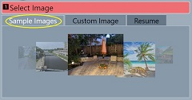
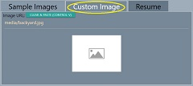
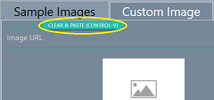
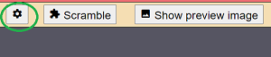

Overview
Jigsaw Puzzles lets you turn any image into a jigsaw puzzle. Try the samples images, or select your own. Set the difficulty by increasing the number of pieces.
As you work on a puzzle, your progress is saved automatically. If needed, you can resume your most recent in-progress puzzle.
Selecting an image
Sample Images 
To browse sample images, make sure the Sample Images tab is selected. Center your selection in the image carousel, then proceed to the next step.
Resuming a puzzle where you left off

If you didn't complete your last puzzle, Jigsaw Puzzles will initially show the Resume tab. You can resume from the automatically saved state as long as you don't Scramble a new image.
If you don't want to resume, select either the Sample Images tab, or the Custom Image tab to select your next jigsaw puzzle image.
Custom Images 
You can use any web-based image as your jigsaw puzzle image. As long as you can form a valid URL for the image, you can use it.
 Here are typical steps to selecting a custom puzzle image,
using the Chrome browser:
Here are typical steps to selecting a custom puzzle image,
using the Chrome browser:
-

Find an image you like, preferably in another browser tab
- Google Image Search is a good starting point
- Use a search word such as "art" to find art images.
- Make sure the image is large or medium for good detail
- Right-click on the image, and select "Copy image address"
- In the Jigsaw Puzzles window, select the
Custom Image tab,
then paste the image URL:
- Click on the Clear & Paste (Control-V) button
- Paste using Control-V on desktop/laptop, or long-press on tablets
Custom Images - Advanced
Advanced users have the option of embedding a custom image URL directly into the link that launches the Jigsaw Puzzles landing page. Append "?url=", followed by an image URL. Clicking on such a link will pre-select the given custom image URL.
You can test that the custom image URL is valid by clicking on the Test button
Play Options
Number of pieces
The number of pieces selection sets the difficulty level. 50 pieces is the easiest. 100 or 200 are moderately difficult, while 400 pieces provides a more time-consuming challenge. The higher selections for the number of pieces should only be attempted on large screens.
On desktps and laptops, you may be able to toggle full-screen mode with F11
Zoom level
A zoom level of 50% means that the completed puzzle will occupy 50% of the browser window area. A smaller zoom level will provide more working space after scrambling the puzzle. The default zoom level of 33% should provide ample working area for puzzle pieces.
Working on the puzzle
Press the Start button to begin working on the puzzle.
The puzzle play starts by showing the completed puzzle. If you are happy with the puzzle image and settings, click Scramble to randomize the pieces. The position and movement of all pieces will now be saved automatically as you play.
To move puzzle pieces, press and drag the piece to a new location. When you move matching pieces next to each other, they will snap together. You can then drag the group as one piece.
 settings - Settings menu
During puzzle play, you can change the size of the preview window and the background color through the in-game settings menu.